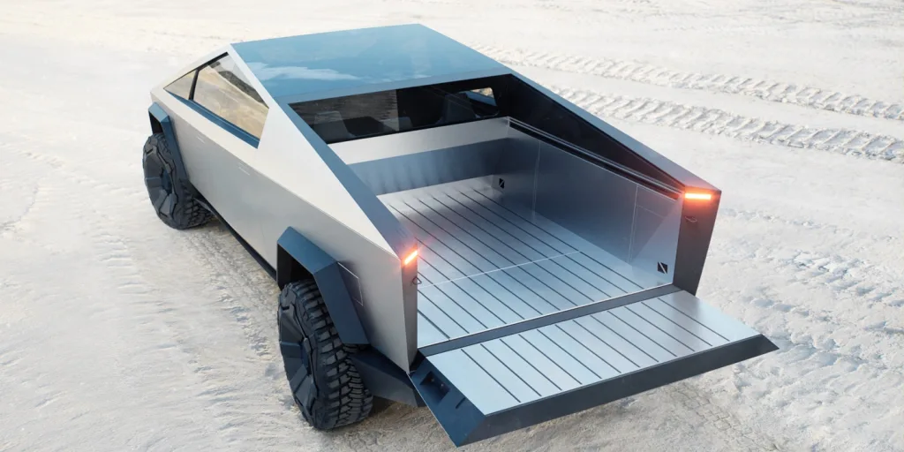

All Bookmarks

Drive Tesla
@DriveTeslaca . May 5
South Korean Firm wins $300 million Cybertuck parts supply contract. It is truely a remarkable day for South Korea.
driveteslacanada.ca
South Korean Firm wins $300 million Cybertuck parts supply.
Tesla is getting closer to Cybertuck production, and when it does some parts will be supplied by..
TESLARATI
@Teslarati . May 5
Tesla Cybertruck production teased at $227M+ order for parts.

teslarati.com
Tesla Cybertruck production teased at $227M+ order for parts.
Tesla ordered parts closed to an amount of $225 million from South Korean company. This is a great..